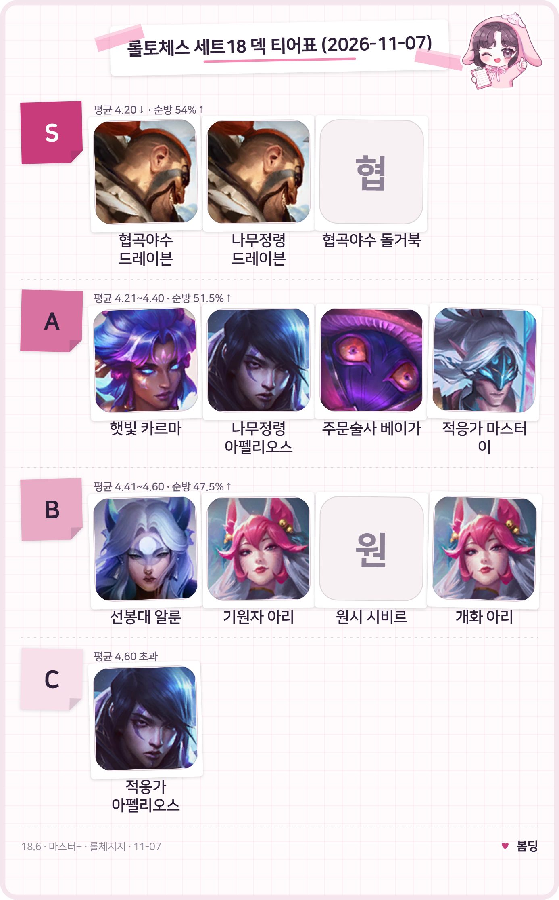
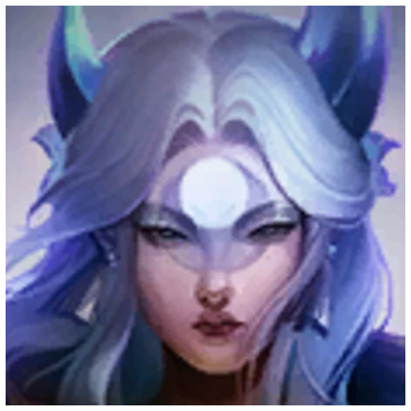
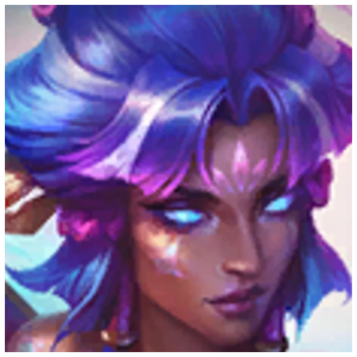
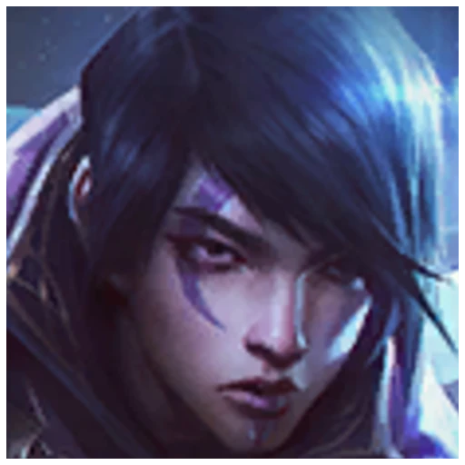

롤토체스 덱 티어 18.6 마스터+ 평균등수·순방률 기준
11월 4일에 18.6이 들어오고 사흘이 지난 11월 7일 토요일, 롤체지지 마스터+ 기록(표본 364,434판)으로 롤토체스 덱 티어를 다시 줄 세워 봤어요. 이번에도 평균등수와 4등 이내로 들어온 비율(순방률) 두 기준으로 S부터 C까지 나눴는데요, 제일 먼저 눈에 들어온 건 점유율 2위 선봉대 알룬이에요. 지난 18.5b 글에서 S였는데 이번엔 B로 내려앉았거든요. 뒤에서는 인기와 성적이 어긋나는 덱을 짚고, 마지막에 어떤 덱부터 연습할지까지 정리해 볼게요.
롤토체스 덱 티어표, 패치 18.6 마스터+ 기준
패치 18.6 마스터+ 기준 S 티어는 협곡야수 드레이븐, 나무정령 드레이븐, 협곡야수 돌거북 세 덱이에요.

점유율 상위 12덱을 S부터 C까지 한 장에 담았어요. 이름 옆 숫자는 아래 표에서 그대로 확인할 수 있어요.
이미지: 도구함 티어표 제작 / 수치: 롤체지지
- S (평균등수 4.20 이하, 순방률 54% 이상) 협곡야수 드레이븐 4.00, 나무정령 드레이븐 4.03, 협곡야수 돌거북 4.10이에요. 세 덱 모두 순방률이 56%를 넘어요.
- A (4.21~4.40, 순방률 51.5% 이상) 햇빛 카르마 4.26, 나무정령 아펠리오스 4.30, 주문술사 베이가 4.31, 적응가 마스터 이 4.34예요. 나무정령 아펠리오스는 순방률 54.0%라 S 기준은 넘지만 평균 4.30이 S 선(4.20) 밖이라 A예요.
- B (4.41~4.60, 순방률 47.5% 이상) 기원자 아리 4.45, 원시 시비르 4.57, 개화 아리 4.58이에요. 선봉대 알룬은 평균 4.39라 평균만 보면 A 칸인데, 순방률 50.5%가 A 최소선 51.5%에 못 미쳐 두 기준 중 낮은 쪽인 B에 뒀어요.
- C (4.60 초과) 적응가 아펠리오스 한 덱이 평균 4.68, 순방률 47.8%예요.
기준 패치 18.6 · 마스터+ 랭크 · 최근 2일 · 롤체지지 조회 2026.11.07 13:06 KST · 표본 364,434판 · 패치가 들어온 지 사흘밖에 안 돼서 수치가 아직 흔들릴 수 있고, 18.6b가 적용되면 더 달라질 수 있어요. 점유율 상위 12덱(각 1만 판 이상)만 그렸고, 티어 경계는 이 글의 기준이에요.
롤토체스 18.6 점유율 상위 12덱 평균등수·순방률 표
점유율 상위 12덱 가운데 평균등수가 가장 낮은 덱은 4.00의 협곡야수 드레이븐이고, 순방률이 가장 높은 덱은 57.8%의 협곡야수 돌거북이에요.
| 덱 | 점유율 | 평균등수 | 순방률 | 1위 비율 | 티어 |
|---|---|---|---|---|---|
| 협곡야수 드레이븐 | 8.97% | 4.00 | 56.3% | 25.7% | S |
 선봉대 알룬 | 7.13% | 4.39 | 50.5% | 18.5% | B |
| 협곡야수 돌거북 | 6.03% | 4.10 | 57.8% | 13.8% | S |
 햇빛 카르마 | 6.00% | 4.26 | 55.0% | 13.7% | A |
 나무정령 드레이븐 나무정령 드레이븐 | 5.34% | 4.03 | 56.6% | 22.0% | S |
| 개화 아리 | 5.18% | 4.58 | 48.5% | 10.2% | B |
| 기원자 아리 | 4.88% | 4.45 | 51.5% | 11.0% | B |
| 원시 시비르 | 4.72% | 4.57 | 49.7% | 7.2% | B |
| 주문술사 베이가 | 4.44% | 4.31 | 53.5% | 12.5% | A |
 적응가 아펠리오스 적응가 아펠리오스 | 4.33% | 4.68 | 47.8% | 5.0% | C |
 나무정령 아펠리오스 | 3.66% | 4.30 | 54.0% | 12.8% | A |
| 적응가 마스터 이 | 2.96% | 4.34 | 53.1% | 10.7% | A |
이미지: 라이엇게임즈 챔피언 아이콘(Community Dragon) · 협곡야수 돌거북·원시 시비르는 전용 아이콘이 없어 이름만 적었어요
티어는 평균등수로 먼저 칸을 정하고, 순방률이 그 칸의 최소선(S 54%, A 51.5%, B 47.5%)에 못 미치면 한 칸 내리는 식이에요. 점유율은 전체 364,434판 중 그 덱이 차지한 비율이고, 이 12덱을 합치면 전체의 약 64%라 지금 마스터 판의 상당 부분을 덮어요. 평균등수는 낮을수록 좋고, 순방률은 8명 중 4등 안에 든 비율, 1위 비율은 우승한 판의 비율이에요.
롤토체스 덱 티어와 점유율이 어긋나는 덱, 18.5b와 비교
18.6에서도 점유율과 티어는 따로 움직여서, 점유율 2위 선봉대 알룬은 B이고 점유율 10위 적응가 아펠리오스는 C예요.
선봉대 알룬은 1위 비율 18.5%로 12덱 중 세 번째로 높은데 순방률은 50.5%라, 우승은 자주 하지만 4등 안을 꾸준히 지키지는 못하는 덱이죠. 개화 아리는 점유율 6위(5.18%)인데 평균 4.58에 순방률 48.5%인데요, 18.6에서 개화 특성이 상향됐는데도 평균은 아직 B 구간 아래쪽이네요. 적응가 아펠리오스는 평균 4.68로 12덱 중 가장 높아(나쁜 쪽), 1위 비율도 5.0%로 가장 낮아요.
지난 18.5b 글과 같은 이름의 덱끼리 견주면 이래요. 다만 그때는 패치 18.5b였고 10월 27일 기록(425,828판)이라 시점이 달라요. 게다가 사이에 18.5c와 18.6이 끼어 있어서 왜 달라졌는지는 단정할 수 없어요.
- 협곡야수 드레이븐: 평균 4.07·순방률 54.8% → 4.00·56.3%로 S를 유지해요.
- 선봉대 알룬: 4.17·54.4%(S) → 4.39·50.5%(B)로 가장 크게 내려갔어요.
- 나무정령 아펠리오스: 4.17·55.8%(S) → 4.30·54.0%(A)예요.
- 적응가 아펠리오스: 4.53·51.0%(B) → 4.68·47.8%(C)예요.
- 적응가 마스터 이: 4.61·48.3% → 4.34·53.1%로 평균이 0.27 좋아졌어요.
18.5b 표에서 점유율 1위였던 협곡야수 덩굴정령 이름은 이번 상위 덱 목록에 없고, 대신 협곡야수 돌거북 덱의 핵심 유닛 목록에 덩굴정령이 올라 있어요. 이름만으로 같은 덱이라고 보기는 어려워서 비교 대상에서 제외했어요.
롤토체스 18.6 패치에서 바뀐 것, 덱 티어와 이어지는 부분
드레이븐·알룬·돌거북 같은 대표 챔피언을 직접 바꾼 항목은 없지만, 개화 상향(55→65%)과 나무정령 9기 하향(25→10%)은 덱 이름에 든 특성이 직접 바뀐 것이고, 감시자 보호막 상향이나 코부코·렉사이 상향이 간접으로 닿을 수 있어요.
- 개화: 공격력·주문력 마지막 구간이 55%에서 65%로 올랐어요.
- 나무정령: 9기 활성 구간의 추가 체력이 25%에서 10%로 내려갔어요. 다만 지금 기록의 나무정령 드레이븐 대표 구성은 5기 활성이라 구간이 달라요.
- 감시자: 돌거북·알룬 덱의 핵심 4코인데, 보호막 체력 계수가 10%에서 12%로 올랐어요.
- 코부코·렉사이: 1단계 상향이고, 공식 노트가 티모·베이가 중심 리롤 조합의 더 높은 저점을 기대한다고 적은 만큼 주문술사 베이가와 닿을 수 있어요.
그래서 알룬이 내려가고 드레이븐이 올랐다는 걸 패치 탓이라고 말하기는 어려워요. 감시자 상향은 알룬에게 오히려 상향이고, 노트 서두에 적힌 18.5 추가 패치의 카직스·덩굴정령 하향이 겹쳤을 수도 있어서, 원인을 하나로 단정하지는 못하거든요.
롤체지지에 올라온 18.6b 추가 패치 노트(7일·10일 적용분)를 보면 덱 수치를 바꾸는 항목은 없었고, 수정·편의 개선 위주예요. 공식 18.6 노트에는 아직 이 내용이 없어서 롤체지지 기준이고, 적용 뒤 수치는 조금 달라질 수 있어요.
롤토체스 18.6 어떤 덱부터 연습할까, 상황별로
성적만 보면 협곡야수 드레이븐이 가장 앞서고, 4등 안을 지키는 안정감이 필요하면 협곡야수 돌거북이 맞아요.
덱 고를 때, 이럴 땐 이렇게
· 1등을 노리고 싶다면 협곡야수 드레이븐이에요. 1위 비율 25.7%가 12덱 중 가장 높고, 핵심 드레이븐·장로 드래곤·마오카이·케넨이 전부 5코라 레벨을 높게 올려야 하는 덱이에요.
· 4등 안을 지키고 싶다면 협곡야수 돌거북이에요. 순방률 57.8%로 가장 높고, 핵심에 돌거북 3코, 덩굴정령·감시자 4코가 섞여 있어요.
· 드레이븐 연습을 한 번에 두 덱에 쓰고 싶다면 나무정령 드레이븐이에요. 평균 4.03·순방률 56.6%인데 핵심 드레이븐·마오카이·케넨이 협곡야수 드레이븐과 겹쳐요.
· 점유율 2위라는 이유로 알룬부터 고르기보다는 순방률 50.5%를 먼저 보고 고르시는 게 좋아요.
핵심 유닛 아이템은 지금 기록 기준으로 협곡야수 드레이븐의 드레이븐이 구인수의 격노검·무한의 대검·크라켄의 분노, 협곡야수 돌거북의 덩굴정령이 밤의 끝자락·구인수의 격노검·수은으로 잡혀 있어요.
자주 묻는 질문
Q. 표에 없는 덱 중에 성적 좋은 덱은 없나요?
있어요. 싸움꾼 마스터 이는 6,688판(점유율 1.84%)에 평균 4.14·순방률 57.0%로 기준상 S 구간이에요. 요정 시비르(2,743판)는 4.19·56.5%, 사냥꾼 장로 드래곤(1,524판)은 4.13·56.4%인데, 표본이 적어 하루 이틀 새 크게 흔들릴 수 있어서 이번 표에는 넣지 않았어요.
Q. 18.6에서 그 밖에 뭐가 바뀌었나요?
4단계 유닛이 소폭 올랐고 증강과 수호령 값도 조정됐어요.
· 말파이트 보호막 735/885 → 750/925, 스킬 피해 40/60 → 100/150
· 니달리 공격력형 회복 300/450 → 325/550, 세 번째 사용 추가 피해 125% → 140%
· 감시자 보호막 체력 계수 10% → 12%
· 골동품 수레 상징 비용 15 → 17골드
· 흥청망청 최초 골드 6 → 7
1단계 코부코·렉사이와 2단계 어스름늑대도 소폭 상향됐고, 버그 수정 중에는 개화가 꺼져 있을 땐 달오름·햇빛 선물 수호령 업그레이드가 상점에 나오지 않게 고친 것도 있었어요.
Q. 증강 티어도 있나요?
이 글에는 없어요. 이 글은 덱 성적만 다뤘어요.
점유율은 알룬이 앞서는데 막상 1위는 드레이븐 쪽이 훨씬 잘 가져가더라고요~ 일단 이번 주는 드레이븐이랑 돌거북부터 만져 보시면 좋을 것 같아요.
✔ 롤토체스 같이 보기 좋은 내용
· 롤토체스 감사 임무 보상, 1판 보물 토큰 500개와 20판 미니 챔피언
· 롤토체스 18.5c 패치, 카직스·덩굴정령·정의의 손길 3건 수치 정리
· 롤토체스 덱 티어 18.5b 마스터+ 평균등수·순방률 기준
참고한 곳
· 라이엇게임즈 공식 — 전략적 팀 전투 패치 18.6 노트 (조회 2026.11.07)
· 롤체지지 — 덱 통계 (조회 2026.11.07)